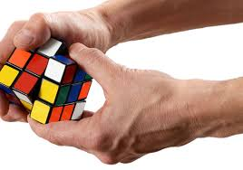
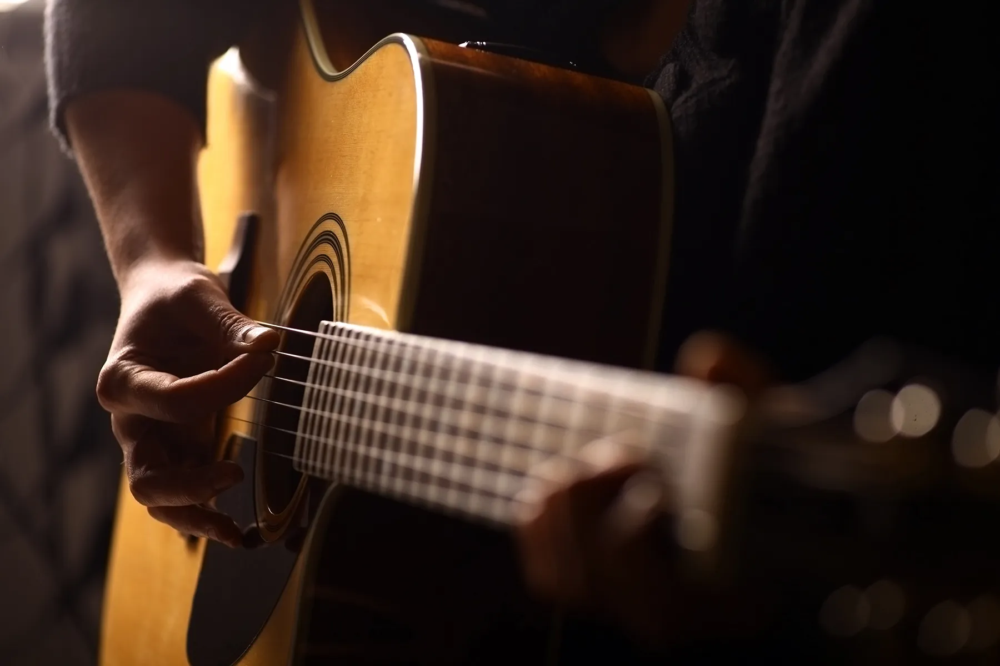

Ever since elementary, I've been addicted to computer games. The one I play the most is League of Legends but I also play other games like Minecraft, Stardew Valley, Valorant, etc. This is one of the reasons why I like programming (I like computers).

I picked up swimming during the summer before my 3rd year in Junior High School. My parents wanted me to learn how to swim a long time ago and I then finally managed to get swimming lessons. It didn't take long for me (literally just a session) to get the hang of it and now I often swim for fun.

I was exposed to HTML during my 3rd year in Junior High School and ever since then, I've been obsessed with programming. After HTML, I picked up Python which became my main programming language for 5 years now (2019 to 2024). I've delved in competitive programming, dynamic programming, web development, game development, data science, and so many more fields in programming because it's a really fun challenge for me.

During my 1st year in Junior High School, two of my friends were really good at solving the Rubik's cube and this influenced most of us to try it out as well. I did really well, considering I had just about 2 months experience, but I stopped because I had a bad Rubik's cube and other interests took over.

I also learned how to play the guitar during my 1st year in Junior High School. I can only play basic chords because I find it very difficult to do and practice the bar chords. I am unsure how to practice playing the guitar and whenever I try out some practice drills, I just get bored. I want to get good but my motivation for playing the guitar is capped at it being just a hobby.

Ever since elementary, I loved reading books. My first ever series that I finished was Percy Jackson. This was also the reason for my obsession back then with Mythology. I was so obsessed with Percy Jackson that I would stay at my school's library after class just to read their books. I had some Percy Jackson books of my own but I finished mostly from the library's collection. After that, I read casually any books I find interesting. Mostly on self-help and non-fiction.